利用坚果云同步全文[^8]¶
需要在不同电脑上阅读文献及写作的人有同步的需要。另外，如果出于对题录信息和全文备份的需要，也可以使用同步。在本章我们使用Zotero来同步题录信息，使用坚果云来同步全文信息。
注册Zotero用户¶
使用Zotero来同步题录信息需要注册Zotero用户，注册的网址是https://www.zotero.org/user/register，注册的流程与一般网站注册用户差别不大， 填入用户名，Email，密码等，然后点击进行人机身份验证前的方框， 根据提示完成后续步骤，最后点击 完成注册， 如[fig:ch3Register]所示。注册完成后网站提示： Thanks for registering. We’ve sent an email to activate your account. 而后查收邮箱，会收到如下内容的邮件：Thanks for signing up for a zotero.org account! Please confirm your email address by clicking on the following link or pasting it into your browser: https://www.zotero.org/user/validate/1ab18fc52bb2b7ba6ddb,validate后面的内容会有差异， 将这些地址复制到浏览器地址栏，按回车，如果页面显示：Success! You registered your Zotero account!则邮箱验证成功。 如果收件箱内没有收到邮件，可以到垃圾邮件内找找，有可能这封邮件被邮件系统误认为是垃圾邮件了。不进行激活也可以使用， 但是无法创建群组(创建群组见4.1)。值得注意的是，注册Zotero用户时需要翻墙， 因为这个网站需要调用Google的人机身份验证，如果不翻墙的话， 无法完成注册[^9]， 当然也可以请国外的亲朋好友帮忙注册用户。 完成Zotero用户注册以后还需要在Zotero登录才能进行题录信息的同步，登录的方法见3.4。
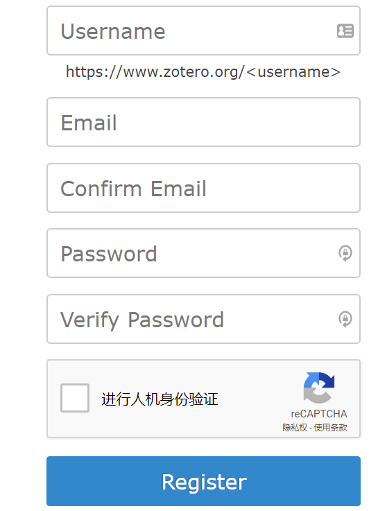
坚果云注册及设置¶
注册坚果云的目的主要是为了同步全文，Zotero也提供了同步全文的空间， 免费的空间只有300M，2G空间的年使用费为20$， 如果是土豪可以选择使用Zotero来同步全文， 也算是为开源社区做点贡献，支持Zotero的发展。 另外一个可供选择的方法是使用Zotero来同步题录(Zotero提供的同步题录的空间貌似是无限的)， 而使用同步盘来同步全文， 可以使用国外的OneDrive、 Dropbox、 Google Drive、MEGASync等同步盘来完成， 但这些同步盘(网盘)要么在国内无法访问，要么速度比较慢，所以我们只能选择国内的同步盘来完成。 这里推荐使用坚果云同步盘，这个同步盘也支持多个操作系统，它可以还提供WebDAV的方式进行访问，对于普通用户， 它提供每个月1G的上传流量，3G的下载流量，超过以后停止上传或下载，到下个月后自动恢复，这些流量对于一般的用户也足够了。
-
根据自己的操作系统到https://www.jianguoyun.com/s/downloads下载相应的客户端， 并进行安装， 安装过程与其他程序大同小异，在此不再赘述。安装完成以后，在系统托盘中会出现一个坚果的图标。 如果没有图标，可以到坚果云的安装目录中双击Nutstore.exe运行坚果云同步盘， 运行后需要注册一个坚果云的用户， 如[fig:ch3JianguoRe]所示，填入需要Email、 密码及昵称等信息，如[fig:ch3JianguoReg2]所示， 点击，可能还需要手机验证。 后续还需要设置的文献贮存的地址，如[fig:ch3JianguoReg3]所示， 然后关闭此窗口。 当然也可以在坚果云的网站https://www.jianguoyun.com/d/signup上注册用户, 然后在[fig:ch3JianguoRe]点击， 登录完毕后再设置需要同步的目录。
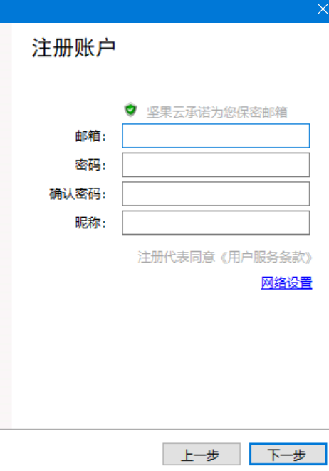
-
此时，将文件或文件夹复制到[fig:ch3JianguoReg3]的所设置的文件内， 坚果云就会将文件同步到坚果云的服务器上， 如果在其他电脑上登录坚果云的同一用户客户端后， 坚果云会自动将这些文件或文件夹同步到本地。
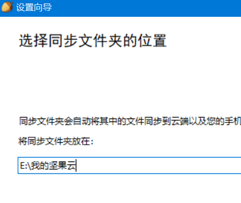
-
因为同步文献全文的需要， 我们需要将同步的文件夹设置我们在[fig:ch3BaseDir]中设置的附件存放的位置， 即图中Base directory的路径， 如；在Windows资源管理器中 找到，在上右击， 选择，如[fig:ch4JianguoAdd]所示； 在接下来的两个对话框中点击 ，正常情况下左下角会出现绿色 对勾表示同步完成，若左下角出现蓝色圆圈则表示正在同步。 当然也可以直接将目录剪切到 [fig:ch3JianguoReg3]目录中， 但是需要在Zotero中 将Base directory（见1.3） 和ZotFile的附件存在的位置也设为这个目录（见3.5）。
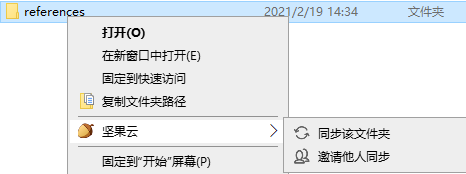
-
在新的需要同步的另一台电脑上，同样安装上坚果云软件，登录后，默认的 reference文件夹放在了[fig:ch3JianguoReg3]的目录中，在Zotero中 将Base directory（见1.3） 和ZotFile的附件存在的位置也设为这个目录（见3.5）， 两个电脑之间包括参考文献条目和附件就可以同步了。
坚果云的其他问题可以访问http://help.jianguoyun.com/查找解决方法。
ZotFile插件安装¶
Zotero可以对题录的全文进行管理，在链接上全文以后，Zotero会将全文复制到其数据文件夹(数据文件夹在5.2.2提到) 的storage文件夹下的一些名字比较奇怪的文件夹下，对于全文的查找和管理带来不便，因此推荐使用ZotFile插件来进行管理。
-
到ZotFile的GitHub网站https://github.com/jlegewie/zotfile/releases 下载ZotFile插件最新版zotfile-v.v.v-fx.xpi(v为具体的版本号)，如[fig:ch3ZotFileDown]所示，
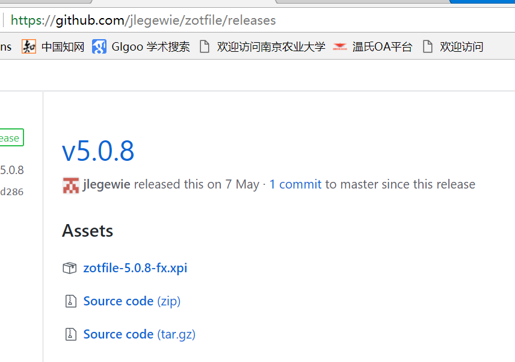
-
Zotero插件与Zotero中其他插件(扩展)的安装方法相同，方法是在Zotero菜单中点击， 如[fig:ch3ZotFileInstall1]所示。
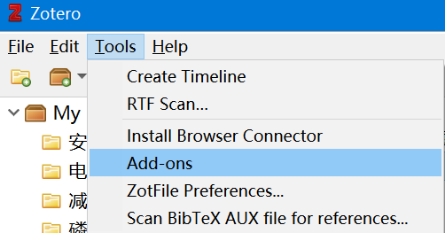
-
在弹出的对话框中， 依次点击， 如[fig:ch3ZotFileInstall2]所示。
-
然后找到以前下载的zotfile-v.v.v-fx.xpi(v为具体的版本号)，如[fig:ch3ZotFileInstall3]所示。
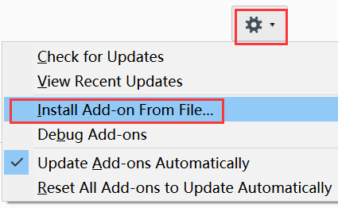
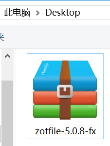
-
随后出现一个3s倒计时，提示安装信任的扩展，结束后， 点击开始安装，如[fig:ch3ZotFileInstall4]所示。
-
安装完成后，会提示ZotFile在重启Zotero后安装， 点击重启，如[fig:ch3ZotFileInstall5]所示， 或是再安装完其他插件后一块重启， 重启后会如果发现Zotero 菜单下有，说明ZotFile插件安装成功， ZotFile插件的设置见3.5。
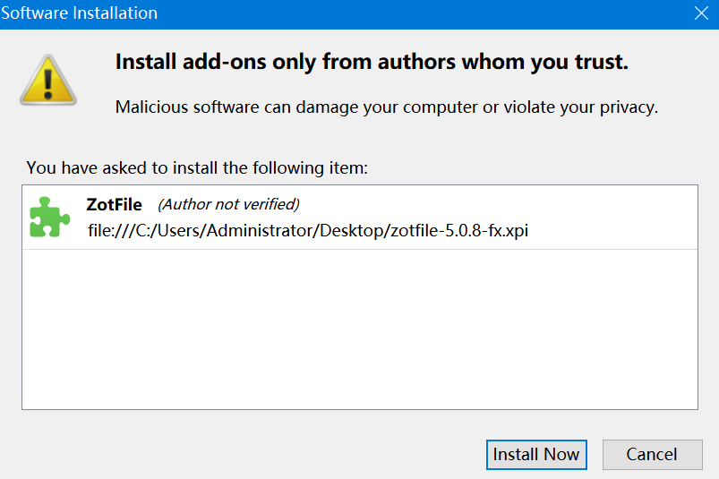
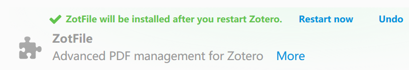
Zotero中同步设置¶
Zotero中的同步设置包括题录同步和全文同步， 我们使用Zotero提供的帐号进行题录同步，利用坚果云进行全文同步。
-
在需要同步的电脑Zotero中依次点击，如[fig:ch3ZoteroPre1]所示。
-
在弹出的Zotero Preferences对话框中点击， 然后在Setting中输入3.1中申请的Zotero的用户名和密码后， 点击，如[fig:ch3ZoteroPre2]所示。
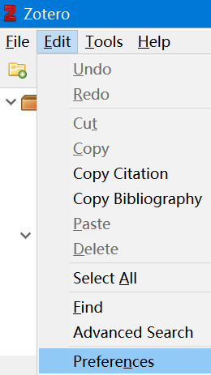
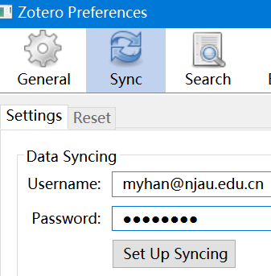
-
如果输入的用户名、密码正确，会弹出文件同步的选项， 点击和 前面的方框使之选中，下面的两个选项不要选中， 如[fig:ch3ZoteroPre3]所示，因为Zotero提供的全文同步空间有限， 我们在3.2中设置了用坚果云同步全文，但此时Zotero还不能同步全文到其他电脑， 还需要使用ZotFile插件将全文附件自动复制到坚果云的同步盘中， 见3.5。
-
也可以利用坚果云提供的WebDAV服务同步全文，方法见http://help.jianguoyun.com/?p=3168, 简书文章https://www.jianshu.com/p/e7f5c3e95cf4。
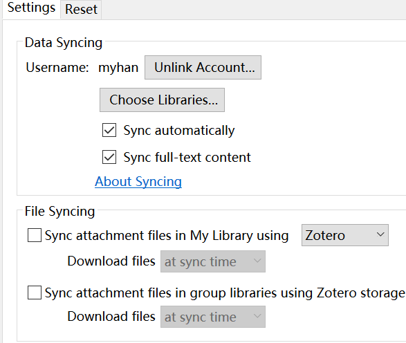
ZotFile插件设置及将附件转移到坚果云同步盘¶
前面提到，默认情况下Zotero将文献全文等附件会转移到数据文件夹中的storage下 的奇怪字符的文件夹下(数据文件夹在5.2.2提到)， 要想将文件保存到自定义的文件夹中并且用Zotero可以方便地打开，需要使用ZotFile插件来完成这项工作， ZotFile插件的安装见3.3。
-
在Zotero中依次点击，如[fig:ch3ZotFilePre1]所示。
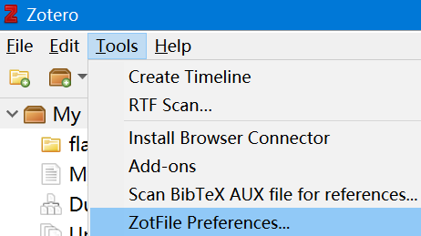
-
点击, 然后点击中小圆圈， 再点击后面的， 选择坚果云中文献全文同步目录，如[fig:ch3ZotFilePre2]所示。
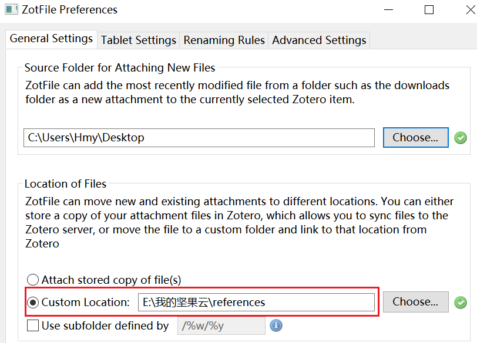
-
最后，对于文献库中存在的并且已经链接全文的题录，需要用ZotFile插件重新命名附件，不同电脑之间才会同步。 在Zotero主界面中，用鼠标或按选中所有题录，然后右击依次点击 ， ZotFile会弹出提示：是否移动且重命名附件，点击，如[fig:ch3ZotFileRename1]所示； ZotFile插件会根据默认的规则对附件进行重命名，并且剪切到以前设置的坚果云同步盘中， 而且在Zotero会形成软链接，如[fig:ch3ZotFileRename2]所示， 完成此步骤后，坚果云就会将这些附件同步附件到服务器，在其他电脑会从服务器同步到本地。 重命名这个步骤只需要对于已经存在于文献库中并且已经链接了全文的题录(见1.3.7)进行此操作， 对于以后从网站下载题录时同时自动下载的附件和手动添加全文的题录ZotFile会自动进行重命名并且移动到坚果云同步目录 [^10]。
设置ZotFile插件使其支持更多的文件类型¶
Zotero的ZotFile插件对附件的管理带来很大的方便， 但默认情况下ZotFile不支持重命名移动caj文件， 在进行重命名时提示：Attachments skipped because they are top-level items, snapshots or the file does not exist。 ZotFile默认仅支持pdf, doc, docx, txt, rtf, djvu格式的文件进行重命名移动。 可以通过支持更多类型的文件，如从中国知网上下载的caj文件。方法是：
在Zotero中点击， 然后在点， 在中的 后面的文本框中添加支持的文件类型，如添加”,caj”， 注意caj前面的英文逗号，而且caj后面没有标点。 然后在Zotero中再进行重命名或添加caj 附件时就会重命名且移动到自定义的目录中了。
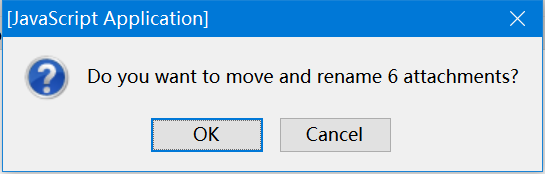
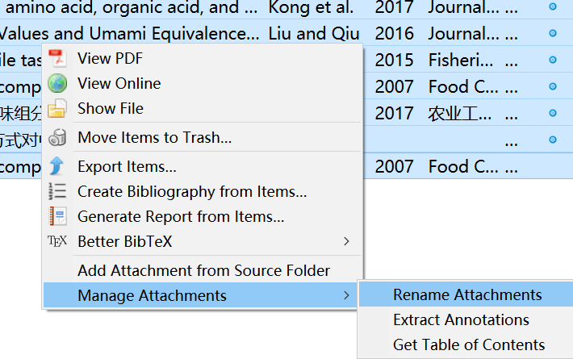
如何让不同主题的参考文献附件放在同一个文件夹¶
我们在收集参考文献时经常需要收集不同主题的文章，如主题包括”3D打印”、”涂膜保鲜”等， 如何将不同主题的参考文献附件放在各自不同的文件夹呢，如将3D打印相关的附件放在文件夹， 涂膜保鲜的放在文件夹。
我们可以结合Zotero的Collection和ZotFile重命名的%c参数来实现。
-
在Zotero中建立”3d” Collection（文件夹）： 在Zotero中依次点击或点击工具栏中的按钮， 如[fig:ch3zotNewCol]所示。
-
输入Collection的名字，如，同样建立其他的Collection， 如[fig:ch3zotNewCol2]所示。
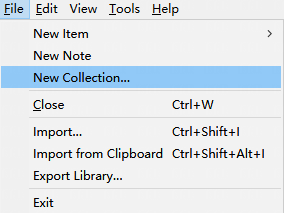
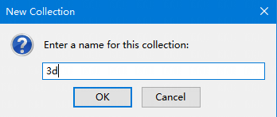
-
在Zotero中依次点击，如[fig:ch3zotPre0]所示， 在弹出对话框中点击， 然后点击前的方框，使之选中， 在后面的框中输入，点击，如[fig:ch3zotGenerSetting0]所示。
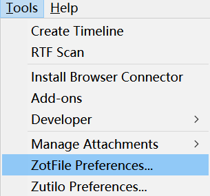
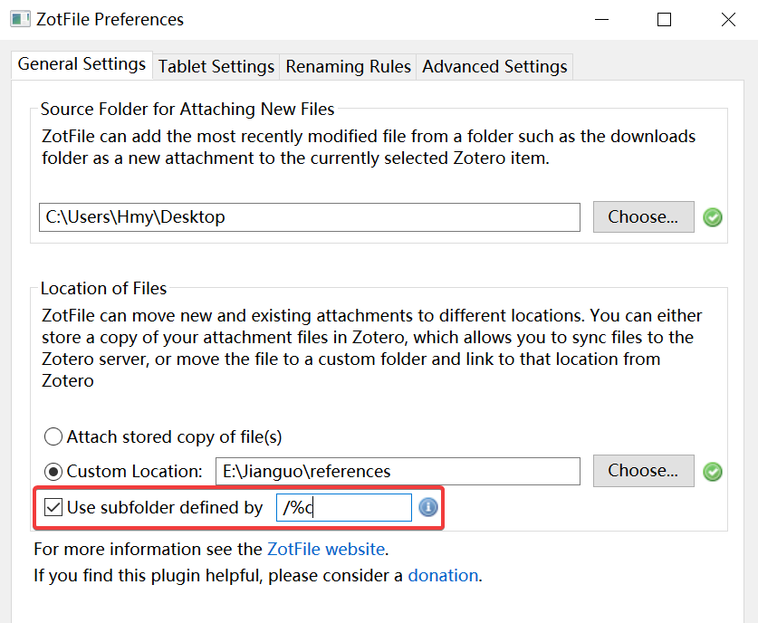
-
在导入文献时，将3D打印相关的文献都导入到这个Collection中， （文献的导入见1.3） 如果设置了自动重命名，则导入的条目中的附件就会自动重命名， 并且放到名字为第2步定义的Collection的子文件夹中（ 此子文件夹放在了ZotFile设置的 目录中， ZotFile设置见3.5）。
-
如果没有自动重命名，则在条目上右击，选择， 如[fig:ch3zotRename0]所示。
-
最终效果如[fig:ch3zotRenameFinal]所示。
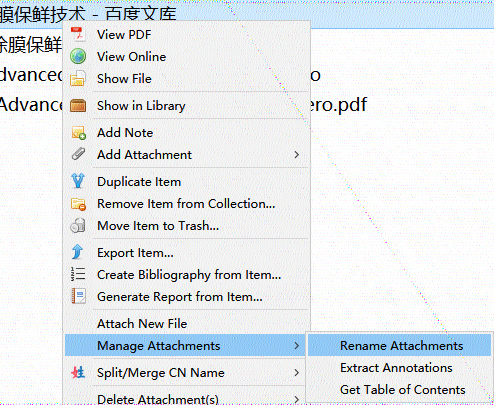
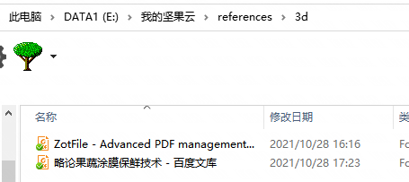
使用ZotFile后如何将文件位置恢复到Storage中？¶
如果使用了ZotFile插件，经过前面章节设置（3.5），会将文献附件统一移动到自定义文件夹里。 但如果某些插件只支持Storage中的文献，如何把自定义文件夹中的文献再恢复到Storage文件夹中呢？
-
在Zotero选中需要转存条目，依次点击， 如[fig:ch3zotConFile]所示。
-
在弹出的对话框中根据自己的情况，如果要删除原位置的文件则选中， 然后点击，如[fig:ch3zotConFileConfirm]所示，注意：如果附件已经在其它程序中打开，需要将其关闭，否则转移可能会失败。
-
然后这些文件就会恢复到Zotero数据目录中的Storage文件夹中的8位字母的文件夹内。
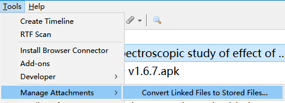
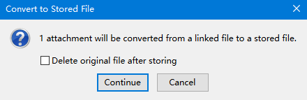
不用代码不用其它软件清理使用ZotFile后删除条目剩余的游离附件¶
由于历史原因，之前使用ZotFile过程中肯定已经删过一些条目，但是不确定附件是否也被删除了。 同时对数据文件夹下，没有在数据库中链接的附件进行清理。或是在ZotFile附件文件夹中可能会存在一些空的文件夹。 如何删除这些文件或文件夹？网上可以找到一些方法包括： Zotero不用安装其它软件清理删除条目后残留的PDF方法（见https://zhuanlan.zhihu.com/p/356071795）， Zotero库中参考文献条目删除后，清除残留PDF的python脚本（见https://zhuanlan.zhihu.com/p/121770068）， 安装了Zotfile后删除文献后清除PDF附件的小程序（见https://zhuanlan.zhihu.com/p/109531298）等， 这些方法或者是需要JavaScript或是需要Python脚本，运行过程也可能会出现错误，对于不太懂编程语言的人来说很痛苦。 近日从https://github.com/jlegewie/zotfile/issues/96的回复中看到一个方法，可以只在Zotero中即可完成清理。 操作步骤如下：
-
先暂停同步： 依次点击，然后点和前面的框， 使都不要被选中。也可点击，退出账号，在弹出的对话框中点击，如[fig:ch3disaSync]所示， 注意不要点击前的方框，如[fig:ch3zotUnlinWaring]所示。
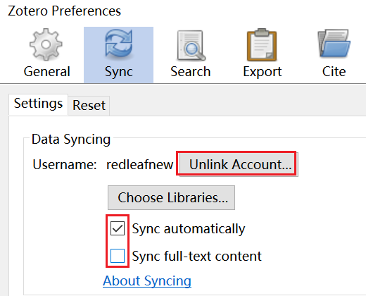
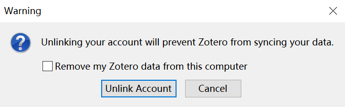
-
在Zotero中依次点击，如[fig:ch3zotPre]所示， 在弹出对话框中点击，然后再点击后面的, 如[fig:ch3zotGenerSetting]所示。
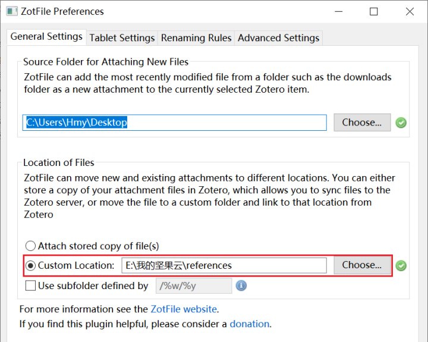
-
然后选择一个新的目录，如，点击，再返回的对话框中点击，如[fig:ch3zotSlePath]所示。
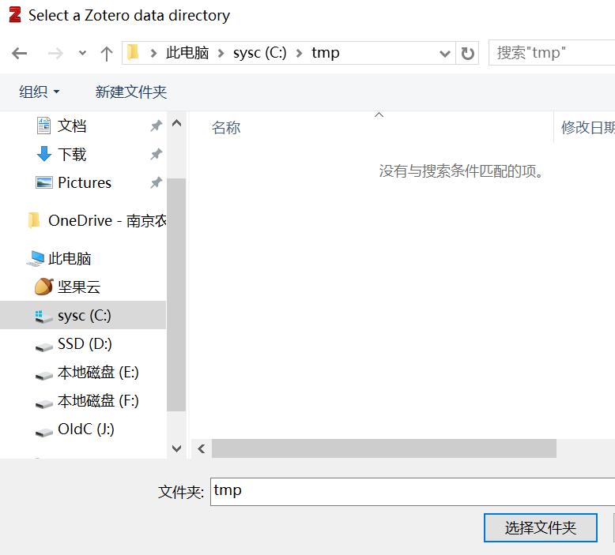
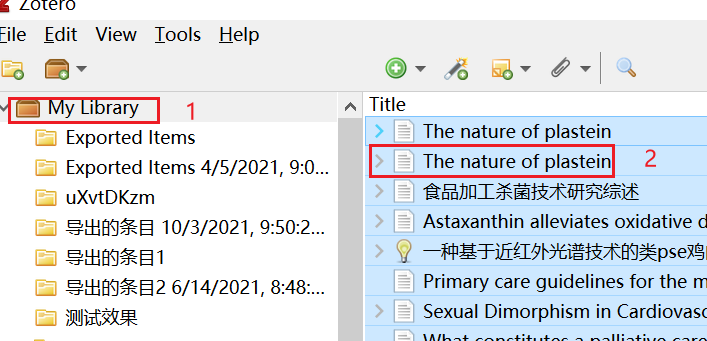
-
在Zotero中点击，然后在右侧详细信息中随便点击一个条目，再按，全选所有文献条目，如[fig:ch3zotSelAll]所示。
-
右击，如[fig:ch3zotRename]所示，在弹出的对话框点击，如[fig:ch3zotConfirm]所示。
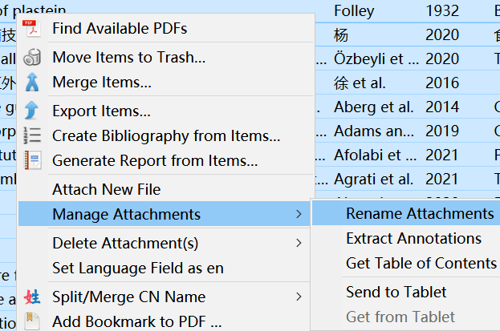
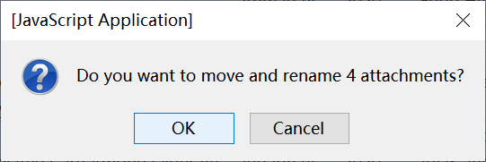
-
这样所有的附件都会转移到新的目录，将原来的文件夹删除即可。如果还是喜欢原来的目录，再重复操作一遍，建立原来的文件夹，再用ZotFile 移动重命名即可。
-
如果没有问题了，重新开启同步即可，同步设置见3.4。
如何只导出多篇文献PDF？¶
QQ群有群友问如何导出多篇文献的PDF以方便和其他人共享， 因为默认的Zotero 5.0导出格式中其附件会导出到单个的文件夹中， 尽管可以用Everything等软件搜索.PDF将这些附件复制或移动出来，但是毕竟不太方便。
在Zotero 6.0中有了导出PDF菜单，导出的方法是，选中需要导出PDF的条目，依次点击， (如果选中的是一篇文献，则显示的菜单是)， 然后在弹出的对话框中选择保存的目录即可。
如果是Zotero 5.0版本，可以安装Delitem插件（下载地址： https://github.com/redleafnew/delitemwithatt，插件安装方法 见3.3），安装后，选中需要导出附件（PDF）的条目， 右击选择，如[fig:ch3expAtt]所示，然后在弹出的对话框中选择保存的目录即可。
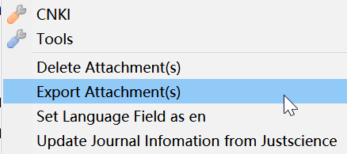
也可以利用ZotFile移动附件的功能将条目的附件移动到某个文件夹， 曲线实现导出多篇文献的附件（PDF）功能，见怎么样可以只导出多篇文献PDF？。